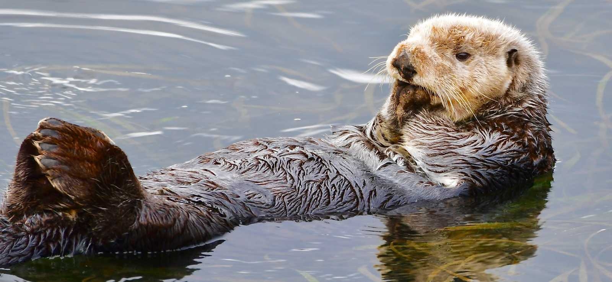

Marine Life
MAMMALS
Sea Otters
What are Sea Otters?
Sea Otters are a marine mammal, they typically weign between 14 and 45kg.
The sea otter main form of insulation is their very thick coat making it the densest in the animal kingdom.
They are capable fo walking on land or living exclusively in the ocean.
Their main source of diet comes from sea urchins, mollusks and crustaceans and some species of fish.
They dive down to catch these fish and use tools like rocks to open shells of its prey.